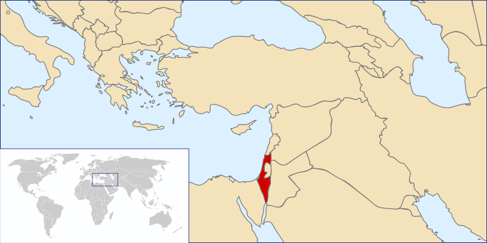

| State of Israel מְדִינַת יִשְׂרָאֵל | |

|

|
| Anthem "Hatikvah" | |
|
 | |
| Capital | Jerusalem |
| Official language | Hebrew |
| Government | Unitary parliamentary republic |

Israel, officially the State of Israel is a country in West Asia. It is bordered to the East and North by the Arabian Association, from the Southwest by the African Commonwealth, by the Red Sea to the south, and by the Mediterranean Sea to the west. Greater Tel Aviv is the financial, economic, and technological center of the country, while its seat of government is in the capital of Jerusalem.
History[]
Formed out of the British Mandate of Palestine in 1948, Israel was created originally to act as a homeland for European Jews after the Jewish Holocaust. Upon declaring independence, Israel carried out the ethnic cleansing of Palestinians and the destruction of hundreds of Palestinian settlements, known as the First Nakba. After facing international pressure, and not having the means to fully displace the Palestininans from their territory, Israel initiated a policy of gradual colonization by permitting Jews to settle in the Palestinian territories, which were condemned by the United Nations as violating international law. Despite multiple attempts by Palestinians and the international community to curb the growth of the settlements, Israel gradually established dominance over most of the territory along the west bank of the Jordan River, and largely walled off the Palestinian exclave in Gaza City.
Israel's main purpose for taking over the bulk of Palestinian territory west of the Jordan River was out of a desire to make the Jordan Valley the nation's breadbasket. After sea levels rose in the 2020s, the Jordan Valley was flooded and this dream largely died. Israel was forced to deepen ties with Turkey and Egypt, one a longstanding ally, the other a former rival. For the 2030s and much of the 2040s, many had hoped that the new state of affairs in Israel would compel an end to the settlement policy, and, at the very least, allow for the creation of some kind of a Palestinian autonomous zone or microstate. However, as sea levels continued to rise, Gaza City was eventually flooded and millions of Palestinians were forced to flee. Rather than integrate the displaced Gazans, Israel directed its military to drive the Palestinians into refugee camps in the Sinai. This prompted uprisings in the West Bank which led to the Second Nakba, an event that saw Palestinians forcibly relocated to the Sinai or Jordan The Palestinian Refugee Crisis brought the Israelis to the brink of conflict with Egypt, however, in a last minute deal brokered by Turkey, Israel agreed to cover the cost of feeding and caring for the Palestinians, so long as they remained in the Sinai camps. Israel further agreed to remain neutral in any future conflict between Turkey and the US effectively ending its alliance with the United States until World War III ended. The Palestinians would gradually leave the Sinai camps over the coming years and decades, before the camps were dissolved by Egypt after the closing of the Sinai Straight in the 2060s.
While the Earth Working Group worked to initiate the The Refreeze, Israel built out the canal from Haifa to the Red Sea to ensure the continued existence of the Sea of Jordan as a defensive position against further hostilities with its Arab neighbors. This project was part of a long-term effort to essentially terraform Israel's Deserts, a process that began shortly after Israel's founding and became the higher priority following the Flood. The Negev Desert, while reduced in scope, would become home to Israel's largest collection of greenhouses and algae farms.
After the end of the Third Mexican-American War, Israel agreed to become a protectorate of the United States, re-establishing a historic alliance that had gone cold for the better part of a century. However, Israel's geographic isolation has led to it becoming one of the most geopolitically isolated members of the American Protectorate System. The issue of Palestinian Repatriation remains a sensitive topic, and Israel routinely threatens rearmament and a decoupling from the Protectorate System if forced to take on the decedents or living survivors of the First or Second Nakbas. However, as of 2160, 57% of Israelis support some form of reparations to Palestinians, while 49% support repatriation for living survivors of the Second Nakba and their immediate families.